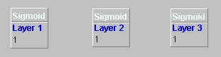
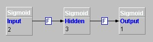

This can be described in a 'truth table' as follows:
| Input 1 | Input 2 | Output |
|---|---|---|
| false | false | false |
| false | true | true |
| true | false | true |
| true | true | false |
It can be shown that three neurons are required to perform the processing.
As this problem uses true and false data, traditionally represented as 1 and 0, a layer of sigmoid neurons will be ideal, as this produces values in the range of 0 to 1. The Initial step is to build the actual network. Three layers will be required to emulate the network:
 The toolbar icon
will appear depressed and moving the cursor over the development pane
will show as a crosshair.
The toolbar icon
will appear depressed and moving the cursor over the development pane
will show as a crosshair.
Click on the development pane. A sigmoid layer will be placed on the screen. Repeat this process twice more so that there are three sigmoid layers on the development pane.

Clicking on any of the layers displays a properties panel, which shows information about the layer. These parameters can be edited.
For each layer, edit the parameters as follows:
| Layer | Layer Name | Rows |
|---|---|---|
| 1 | Input | 2 |
| 2 | Hidden | 3 |
| 3 | Output | 1 |
Click on the layer labeled Input. A blue circle will appear. Click and drag a connection line from this layer to the Hidden layer.
Repeat this between the Hidden layer and the Output layer.

The next tutorial, 'How to Save and Open a Network' shows how to save this project to file.